Balerion the Black Dread
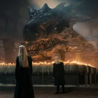Balerion, também conhecido como o Terror Negro, foi o dragão mais temido de Westeros. Ele foi montado por Aegon, o Conquistador, e desempenhou um papel crucial na unificação dos Sete Reinos.
Drogon
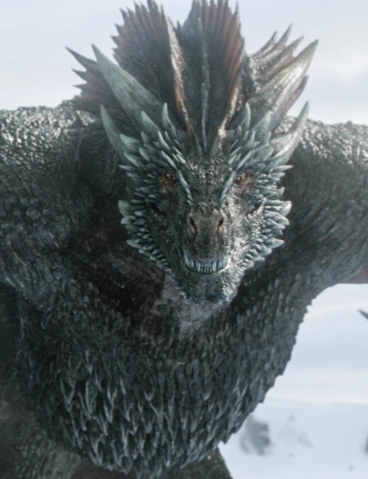Drogon é o maior e mais feroz dos três dragões de Daenerys Targaryen, nomeado em homenagem a Khal Drogo. Com escamas negras e olhos vermelhos, ele é frequentemente comparado a Balerion, o Terror Negro. Drogon tem uma ligação profunda com Daenerys e é o dragão que ela monta em várias batalhas cruciais.
Viserion
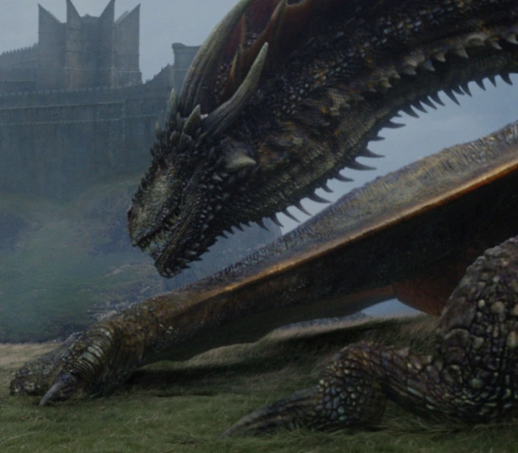Viserion, nomeado em homenagem a Viserys, o irmão mais velho de Daenerys, possui escamas douradas e olhos cor de creme. Ele é leal e feroz como os outros dragões, mas sua trajetória se torna trágica quando é morto e ressuscitado pelo Rei da Noite, tornando-se uma arma contra sua própria mãe e Westeros.
Rhaegal
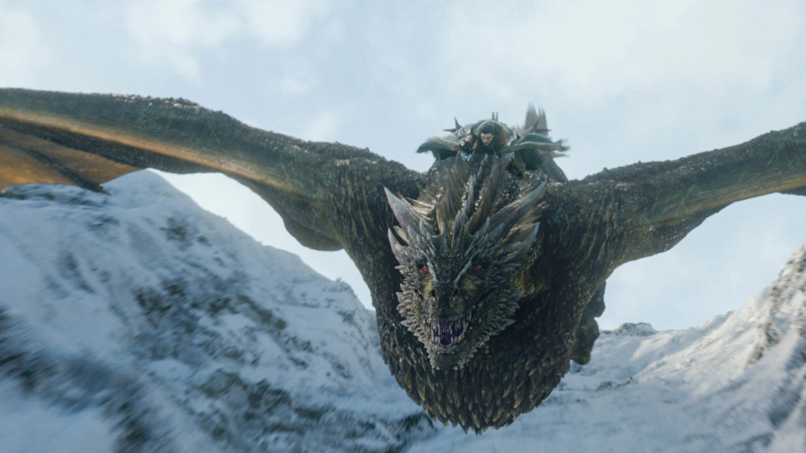Rhaegal, nomeado em homenagem ao irmão de Daenerys, Rhaegar Targaryen, tem escamas verdes com olhos bronzeados. Ele simboliza o amor e a memória que Daenerys tem por sua família. Rhaegal é um dragão poderoso, participando de várias campanhas e sendo essencial para os planos de Daenerys na conquista de Westeros.
Caraxes
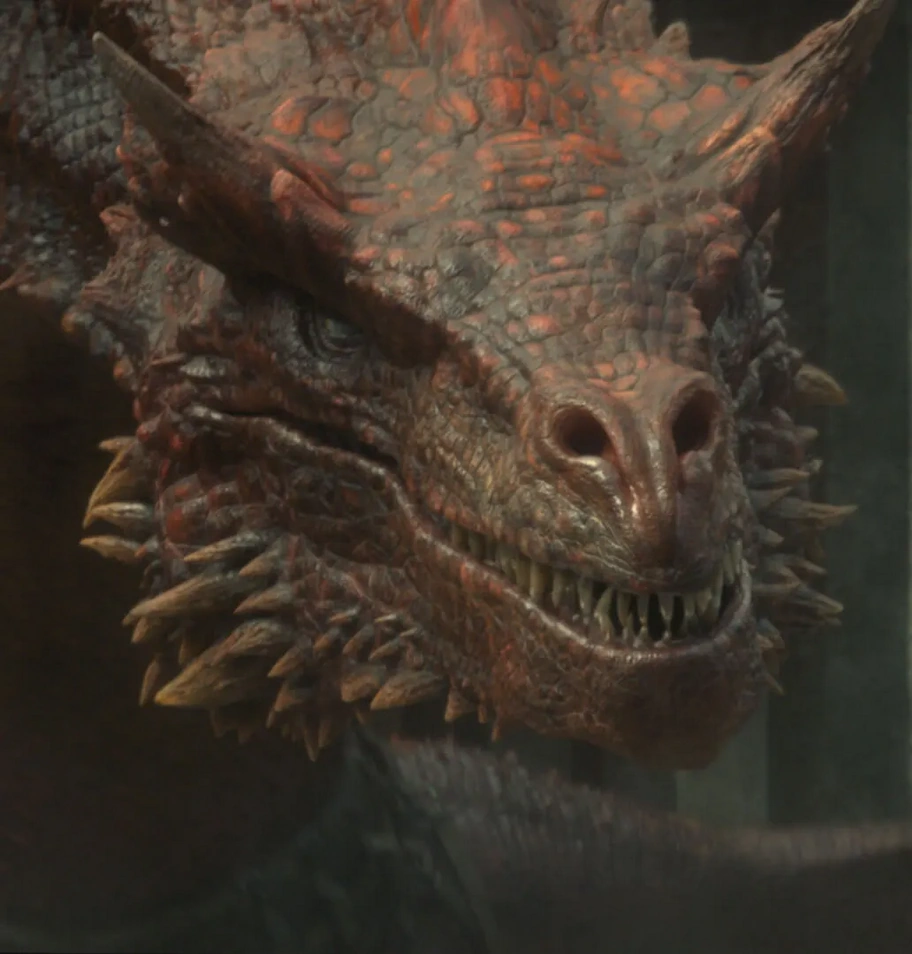Caraxes, também conhecido como o "Dragão Vermelho", era um dragão montado por Daemon Targaryen. Ele foi um dos principais participantes na Dança dos Dragões, a guerra civil dos Targaryen.
Syrax
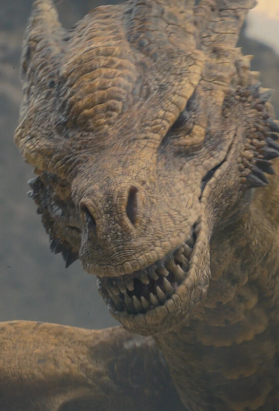Syrax era um dragão da Casa Targaryen montado por Rhaenyra Targaryen, a princesa e herdeira do Trono de Ferro. Com suas escamas amarelas e verdes, Syrax foi um dos principais participantes na Dança dos Dragões, a guerra civil Targaryen. O dragão foi conhecido por sua agilidade e feroz habilidade em batalha, desempenhando um papel crucial na luta pelo trono.
Meleys
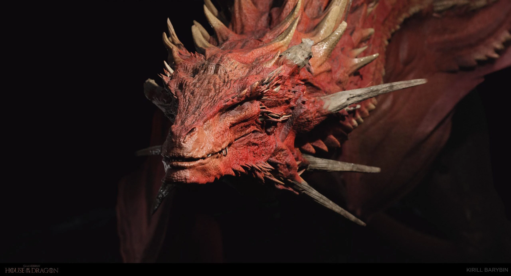Meleys, conhecido como o 'Dragão de Cristal', era um dragão da Casa Targaryen montado por Rhaenys Targaryen, a Rainha que Nunca Foi. Com escamas vermelhas brilhantes e uma aparência imponente, Meleys foi um dos dragões mais ágeis e rápidos da sua época. Ele desempenhou um papel importante durante a Dança dos Dragões, conhecido por sua habilidade em combate aéreo e sua lealdade feroz a sua montadora
Sunfyre

Com as suas chamas e escamas douradas, não é de admirar que este enorme e formidável dragão seja conhecido como “Sunfyre the Golden.” É ele quem acompanha Aegon II Targaryen que em House of the Dragon será interpretado por Tom Glynn-Carney como um adulto e Ty Tennant enquanto jovem
Seasmoke
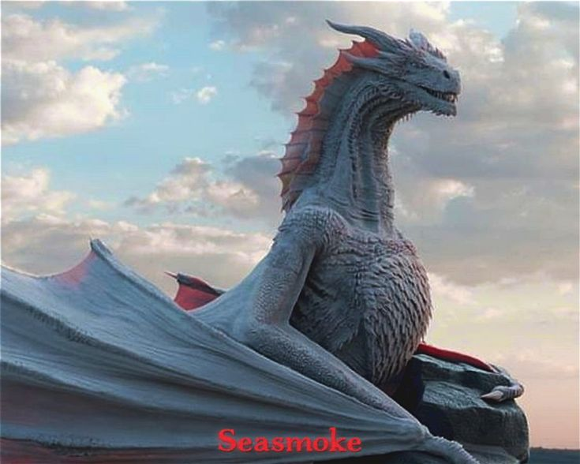Um dragão cinza e branco que durante Dance of Dragons, é ainda relativamente jovem, altura em que desenvolve laços com Ser Laenor Velaryon em House of the Dragon interpretado pelo adolescente Theo Nate e mais tarde em adulto por John Macmillan
Arrax
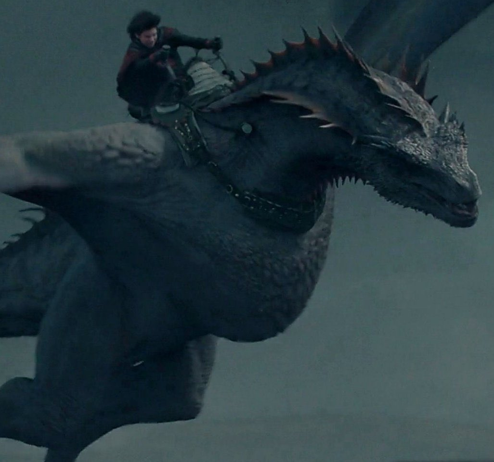Descrito como sendo cinco vezes mais pequeno que Vhagar, este jovem dragão acompanha o príncipe Lucerys Velaryon interpretado por Elliot Grihault como um adulto e Harvey Sadler em jovem
Tessarion
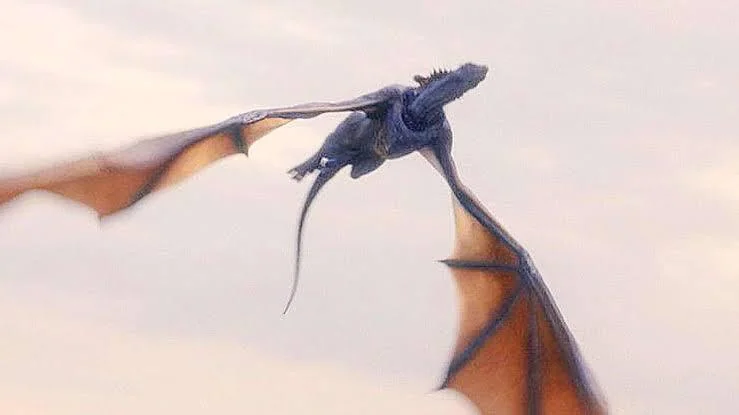Conhecida como “Blue Queen” Tessarion é a dragão do Príncipe Daeron Targaryen, papel que ainda não foi anunciado em House of the Dragon. Conhecida por cuspir fogo azulado, é mais jovem do que Dreamfyre, Sunfyre e Vhagar.
Moondancer
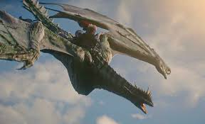Descrita em The World of Ice & Fire como “bela e elegante", é uma fêmea de dimensões mais pequenas, mas a ágil companheira de Lady Baela Targaryen que em House of the Dragon será interpretada por Shani Smethurst e Bethany Antonia, como a versão jovem e adulta, respetivamente
Vermax
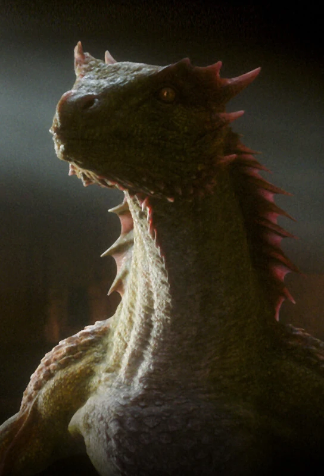Vermax é um jovem dragão que vai servir como montada do Príncipe Jacaerys Velaryon que na série da HBO será interpretado por Harry Collett como um adulto e Leo Hart ainda como um jovem
Morning
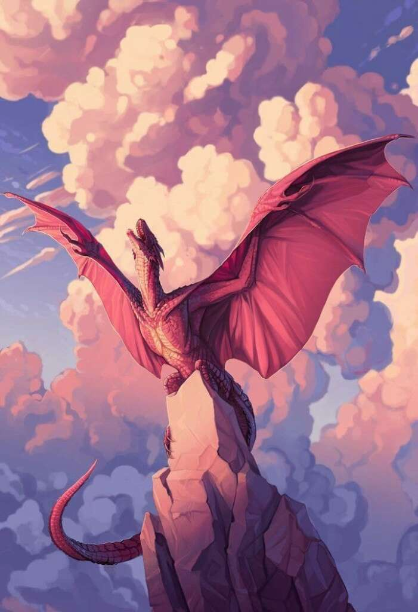Filha de Syrax, esta dragão nasceu durante Dance of the Dragons. Morning tem escamas rosa e espigões negros, sendo a companheira de Lady Rhaena Targaryen que em House of the Dragon é interpretada por Phoebe Campbell na versão adulta e Eva Ossei-Gerning como criança
Stormcloud
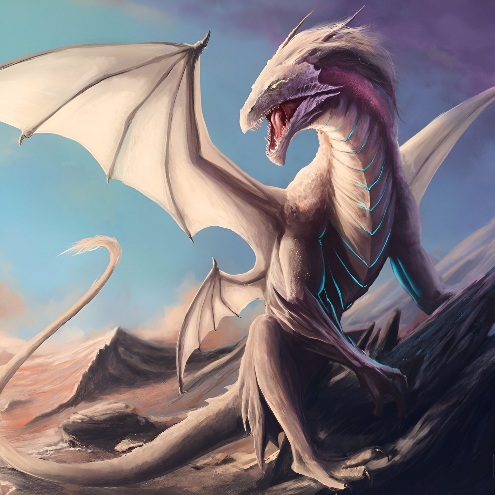O jovem dragão não terá um papel a desempenhar em House of the Dragon até mais para o final da série, altura em que se tornará no companheiro de Aegon the Younger.
Vermithor

“The Bronze Fury,” o terceiro maior dragão, é descrito como "velho e grisalho" em "The World of Ice & Fire". Em tempos, foi ele o dragão de Jaehaerys I Targaryen, também conhecido como Old King.
Vhagar
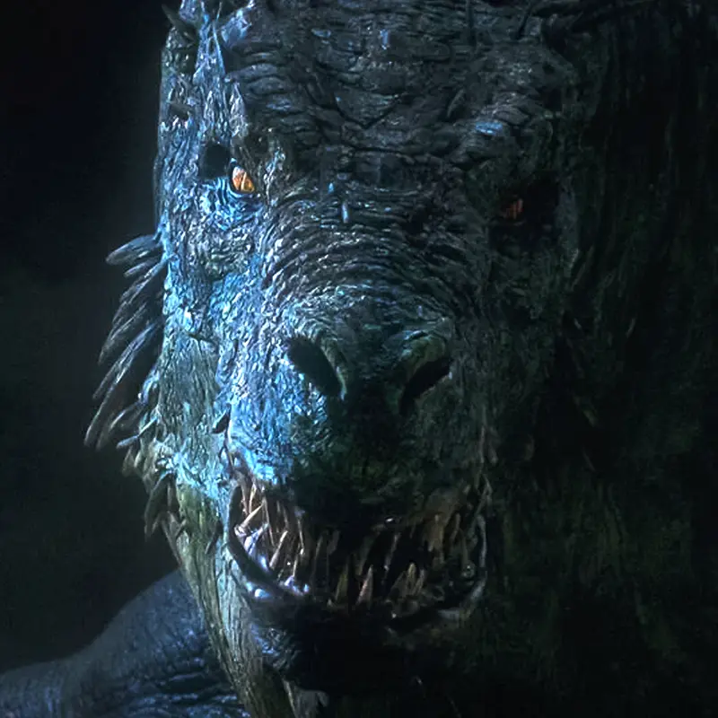O segundo maior dragão dos Targaryens é Vhagar, uma fêmea ancestral e a última que voou durante a conquista de Aegon, quando serviu a Rainha Visenya Targaryen. Juntos, destruíram toda a armada Arryn nas águas de Gulltown. Vhagar foi batizada em homenagem a um Deus de Old Valyria, e será protagonista de um capítulo posterior de House of the Dragon.
SilverWing
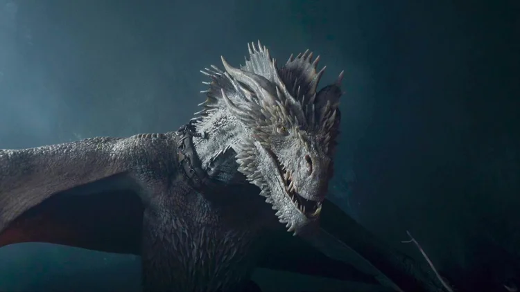Em tempos a montada da Rainha Alysanne Targaryen, este dragão fêmea vai mais tarde tornar-se o companheiro de Ulf the White, um personagem que vai ser introduzido, eventualmente, em House of the Dragon.